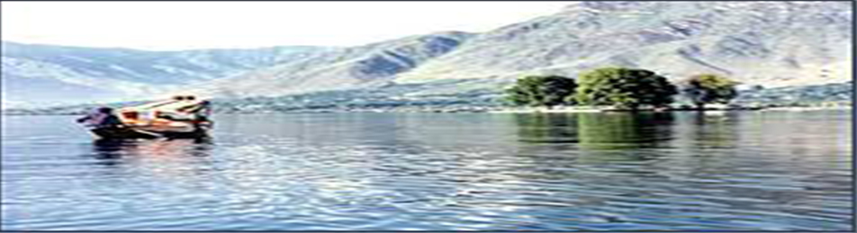

- 


Jammu and Kashmir, over the years, has been regarded as one of the major tourist hot spotsin Asia. Owing to the cool and pleasant climate and its scenic landscapes Jammu and Kashmir showcases itself as a valley right out of heaven. Jammu and Kashmir invites you to explore its snowy peaks, the exotic valleys and icy rivers. The state remains cool throughout the year, making it a perfect summer retreat. Geographically, one can find Jammu and Kashmir split into three major divisions including Jammu, Ladakh and the Kashmir valley. Exploring every nook and corner the state offers can be very challenging. Tourists can climb mountains, row across rivers and (best of all) get to view the huge, majestic Himalayan peaks. Jammu and Kashmir offers its tourists heartwarming hospitality and a lot to look out for . With mouth watering cuisines, luxury boat houses and divine valleys to visit, there can never be a dull moment in Jammu and Kashmir. No wonder, that Jammu and Kashmir is one of the top picturesque states in World.
Jammu is the northern most province of the state, famous for its historic temples and ashrams. Jammu is renowned to be a city which provides a calming atmosphere and has a vast variation in culture to Kashmir and Ladakh. The Line of Control separating India from neighbour Pakistan can be found here. Jammu houses one of the most frequented shrines in India - the Vaishno Devi shrine, which is enclosed under a cave.
Jammu, being on the foothills of the Himalayas has a number of lakes, which attracts tourists throughout the year. The Mansarovar Lake acts as a perfect camping location, with serene flora and fauna surrounding the lake. The Lake also has an interesting piece of history which brings in tourists all year round. The Bahu fort, which was built around 300 years back, houses a temple dedicated to goddess Kali. The fort is considered holy, as it is believed to have been the hideout of the goddess when she was fighting a demon, and is frequented by tourists and pilgrims alike.
Kashmir forms the larger part of Jammu and Kashmir and mainly consists of numerous valleys. The capital of Jammu and Kashmir- Srinagar is located in Kashmir. Kashmir is famous for its juicy apples and the rare saffron fibres.
The Dal Lake, which is considered unanimously as India’s most beautiful lake is in Kashmir. The lake which remains frozen for most part of the year attracts tourists during summer, when the ice melts away and makes way for boat houses and numerous water activities.
The beauty and tourism potential of the valley has made Kashmir an area of conflict between India and Pakistan. A fact which has to be noted is that different parts of Jammu and Kashmir are administered by three countries including India, Pakistan and China. The presence of armed forces around the valley makes it look like a war fortress but deep inside, the valley has beauty, unmatched!
The Ladakh region is around 3000 meters above sea level and consists of important mountain passes. Ladakh, therefore becomes an important trade route connecting Europe and Northern Asia to South-East Asia. Ladakh is of prime importance to the armed forces as it gives access to almost entire Himalayan region. From a tourist’s point of view, Ladakh offers irresistible sights. The Leh and Kargil valleys provide unlimited photographic moments, which would act as perfect souvenirs of the trip to Jammu and Kashmir!